场景 3 GPU 全对 N-Body 引力演化
引力 N 体模拟对 4096 个天体做三维全对引力直接求和，由 WGSL 计算内核加速，WebGPU 不可用时自动降级到数学一致的 CPU 实现。

本文是总述文档 01《产品介绍》的配套附录：把 Studio 的能力展开为 79 条细粒度应用场景，按"从硬核科研到基础教学"排序，每条对应一个真实存在的内置插件或科研工具，场景名即可作为检索词，可与 03《插件系统》、05《科研工具集》对照查找。全部仿真类插件严格数据驱动——初始为空、绝不伪造默认场景，每个核心插件都附带一键可载的示例数据。文末另附场景 80、81 两条速览，补齐 13 类基础图型与未单独成节的领域插件的实截图索引。
电磁谐振特征值求解器面向十万阶非正定厄密稀疏矩阵，提供厚重启 Lanczos、块 LOBPCG 与 Jacobi-Davidson 三种内核，求出的特征对经真实残差认证；图中为微波腔体的 3D 模式场，随共振模式切换实时重算。
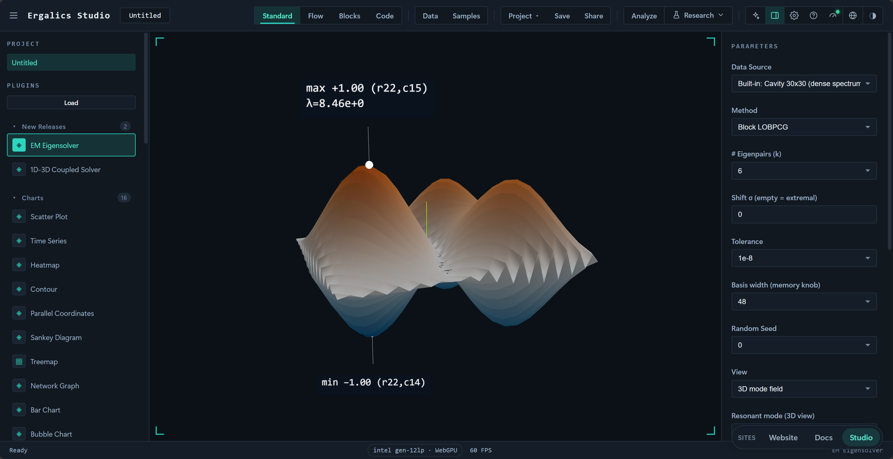
1D-3D 双向耦合求解器把 1D 管网与 3D 场双向耦合，以多速率时间步协调、粗-细时间子循环与毫秒级阀门控制驱动瞬态过程，正反向边界耦合配守恒性审计保证守恒性。
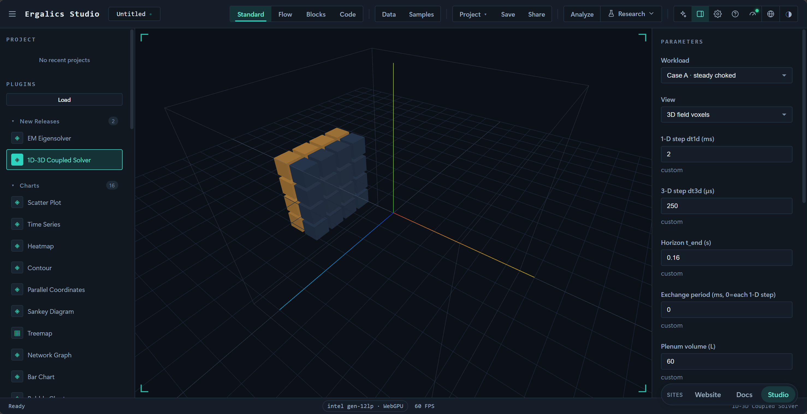
引力 N 体模拟对 4096 个天体做三维全对引力直接求和，由 WGSL 计算内核加速，WebGPU 不可用时自动降级到数学一致的 CPU 实现。
流体模拟（LBM）在 D2Q9 格子上做通道流绕障碍物流动，GPU 内核逐步计算碰撞与迁移并支持 CPU 降级，呈现卡门涡街与机翼绕流。

波动方程插件以有限差分模拟二维波动，提供高斯脉冲、双源干涉与双缝衍射三种场景，由 leapfrog 内核逐步积分。
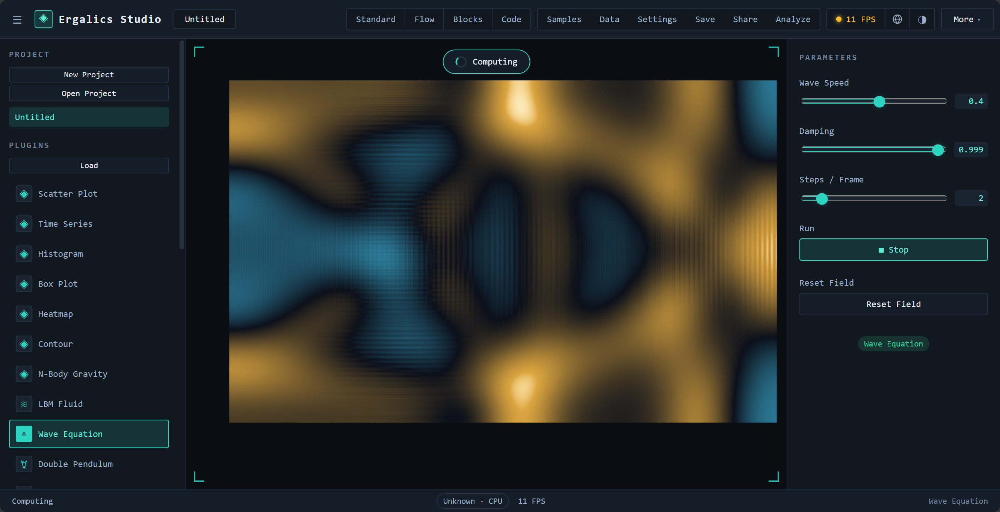
衍射实验室数值计算菲涅尔-基尔霍夫衍射积分，把单缝、双缝、N 缝光栅与圆孔的近场与远场统一处理，图中为单缝衍射的强度与条纹。
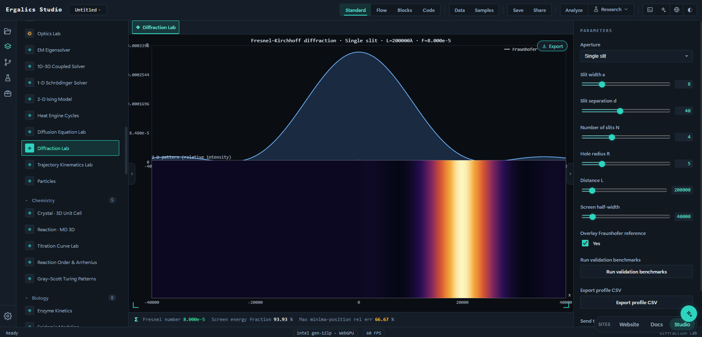
二维伊辛模型在周期格子上运行 Metropolis 与 Wolff 单团簇算法，观测磁化率、比热与 Binder 累积量，χ(T) 峰位拟合给出 Onsager 临界温度。

热传导 / 扩散方程实验室以 FTCS 显式（带稳定性校验）与 Crank–Nicolson 隐式两种格式求解，支持 Dirichlet/Neumann 边界，实时输出数值解与解析解的最大相对误差。
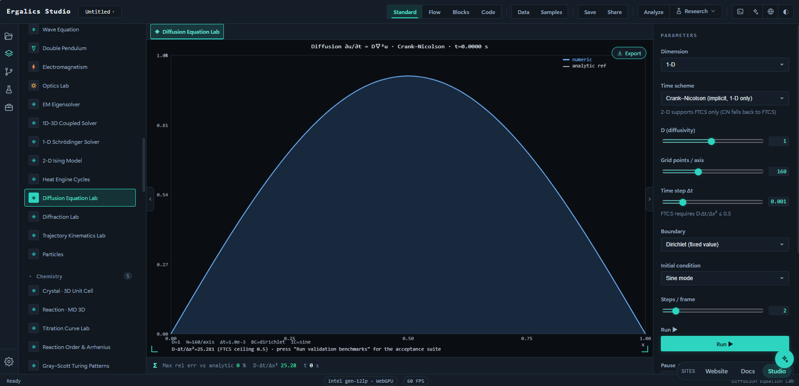
轨迹运动学实验室分析 (t, x[, y]) 轨迹数据：三点 Lagrange 数值微分、可选 Savitzky-Golay 平滑、动能/势能分解与线性化最小二乘抛体拟合。
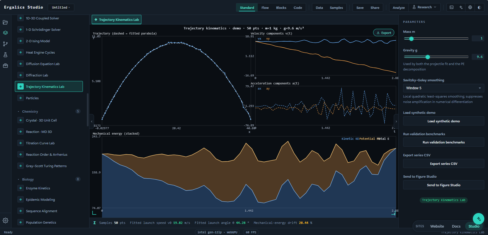
双摆插件以 RK4 积分让主摆与初始角仅差 0.001 rad 的"幽灵摆"并行演化，轨迹快速发散，直观展示混沌对初值的敏感依赖。

电磁场插件在画布上拖动电荷并自由释放，电荷受库仑力与均匀磁场洛伦兹力共同作用做回旋运动，磁场强度与方向可单独设置。

不确定性套件提供 Bootstrap 置信区间、蒙特卡洛传播与 MCMC 采样三条路径，输出 HDI、R-hat、ESS 与 MCSE 等收敛诊断；样本量足够大时自动切到 WGSL GPU 引擎，未达阈值或设备不可用时回落 CPU，两条路径在同一随机数序列下结果一致。

Inference Forge 以 HMC / NUTS 采样器（U 形回旋判据与 Dual Averaging 步长自适应，无须手工设步数）做贝叶斯推断，后验摘要给出 94% HDI、MCSE、R-hat 与 ESS，另有 WAIC、PSIS-LOO 模型比较与后验预测检验。

模型工作台支持 OLS（Householder QR）、逻辑回归（IRLS）、岭回归（K 折交叉验证选参）与多项式拟合，产出含估计值、标准误、p 值与置信区间的系数表，并附 2×2 残差诊断图，支持多模型横向对比。

参数扫描把扫描计划展开为确定性设计点：全网格轴走完整笛卡尔积，拉丁超立方轴按维度分层抽样；执行后可查看响应面。

数据分析工具是假设检验的常规入口：t 检验族、单因素方差分析、Mann-Whitney U、卡方独立性检验与 Cohen's d 效应量，配 Bonferroni 与 Benjamini-Hochberg 多重比较校正；结果可直接转写成中英双语的出版级句子。
马尔可夫链与稳态分析以幂法求稳态分布（L1 残差 < 1e-12）并做遍历性、吸收链与阻尼 0.85 的 PageRank 模式分析；Zipf 定律词频分析对真实语料（《爱玛》公版文本）做分词与词频排序，用 log(rank)–log(freq) 最小二乘拟合指数 s 并与理想值 1 对照。
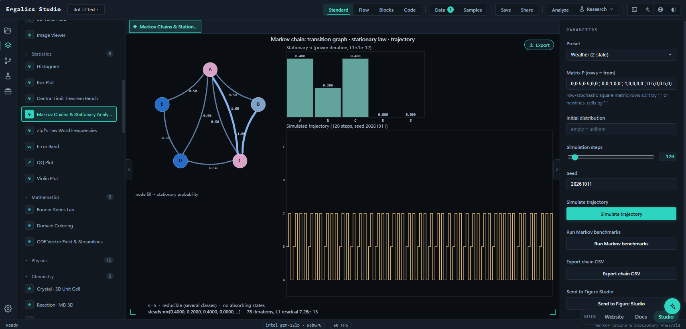
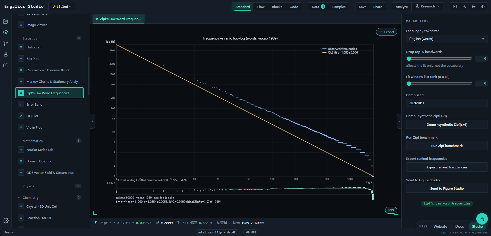
信号实验室提供基 2 FFT 幅值谱、Hann/Hamming/Blackman 窗函数、Welch 功率谱、Savitzky-Golay 平滑、ACF/PACF 与季节分解；滤波后的列可作为派生文件存回项目并自动进入血缘图。图中振动信号的 Welch PSD 主峰落在约 0.02 Hz 并伴谐波。

傅里叶级数逼近实验室用间断点分段 Simpson 求积计算傅里叶系数，对比普通部分和与 Fejér 平均，Gibbs 过冲比例对照经典常数 2·Si(π)/π ≈ 1.17898。

ODE 向量场与流线插件是二维自治系统相平面实验台：RK4 双向流线积分、牛顿法定位平衡点并按雅可比特征值分类。

数据画像流式单遍计算：数值列用 Welford 递推求精确均值与方差、蓄水池采样求分位数，文本列用 HyperLogLog 估计基数；表级给出 Pearson / Spearman 相关，最终综合成 0–100 的确定性质量分与问题清单。

数据清洗向导以分步卡片引导完成类型转换、缺失值策略、离群标注、去重与列重命名五类可序列化操作，每一步预览前后差异且永不改写输入表，可逐步前进、回退或撤销单步。

SQL 数据工作台内置 DuckDB-WASM 引擎，把项目数据文件注册进 DuckDB 虚拟文件系统并直接暴露为表，可对项目里的文件直接写 SQL；查询支持超时与中止信号，超时或中止会终止 Worker 并重建实例，一次跑疯的查询不会拖垮页面。
数据血缘以运行记录上的文件 id 把项目文件（源）连到运行（变换），绘制成 Sugiyama 式分层 DAG（最长路径分层、单趟重心排序）；实验记录为每次执行自动留下参数、指标与耗时的耐久快照，支持指标差异与成对 A/B 对比。
图表工作台把多面板图组挂在 IEEE / Elsevier 期刊模板网格上（Okabe-Ito 色盲友好调色板），逐面板 a/b/c 标签并做投稿前检查，导出 SVG、PDF 与 600dpi PNG。

报告生成器把标题、Markdown 叙述、图表工作台的图、数据表与运行摘要构建成单一自包含 HTML：内联 CSS、SVG 与数据，零依赖原生 JS 控制器，用户字符串先转义，可安全直接投递。

可复现锁导出与校验 repro.lock：数据指纹、参数哈希、种子与代码快照，并纳入环境快照（版本、平台与内核可用性），支持五类漂移判定与一键重跑。

补充材料打包把 manifest（项目元数据、运行记录、血缘图、作者与许可表单）加原始数据、代码会话与可选 repro.lock，用 fflate 打成随论文一起上传的 ZIP。

作品画廊本地陈列按学科整理的可复现作品，每件标注主题、作者、许可与可复现锁状态（已锁定 / 检测到漂移 / 未锁定），详情弹窗可离线重开。
Notebook 把 Markdown 与 Python 单元混排，执行走代码模式同一个 Pyodide 运行时，因此 notebook 与脚本看到的是同一个 studio API；运行记录台账为每次执行自动留下耐久快照，记录存于 IndexedDB 的 runs 存储而不写进 .clproj。
GeoJSON 地图离线渲染矢量数据，支持按数值属性分级设色，提供 Albers（中国）、Web 墨卡托与等距圆柱投影，内置中国省份示例。
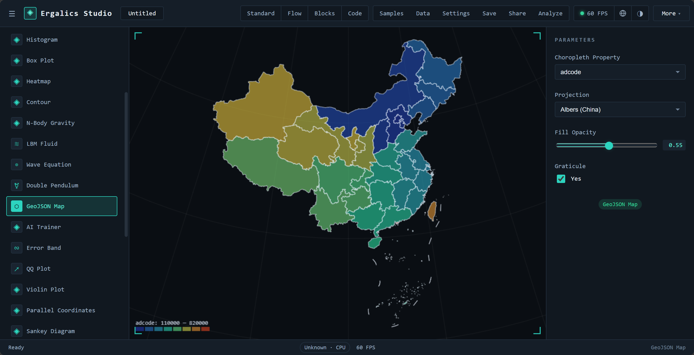
交互地球仪把 Natural Earth 110m 海岸线与经纬网贴在球面上，叠加球面 Tissot 变形圆，可拖拽旋转、滚轮缩放并支持自动自转。

DEM 地形分析解析 ESRI ASCII Grid（.asc）高程数据，提供高程设色、山体阴影、Horn 法坡度坡向、等高线叠加与三维建模视图。

GPX 轨迹分析解析轨迹点（含海拔与时间），统计总里程与累计爬升下降（2 m 迟滞滤波），绘制海拔着色轨迹与海拔-距离剖面。
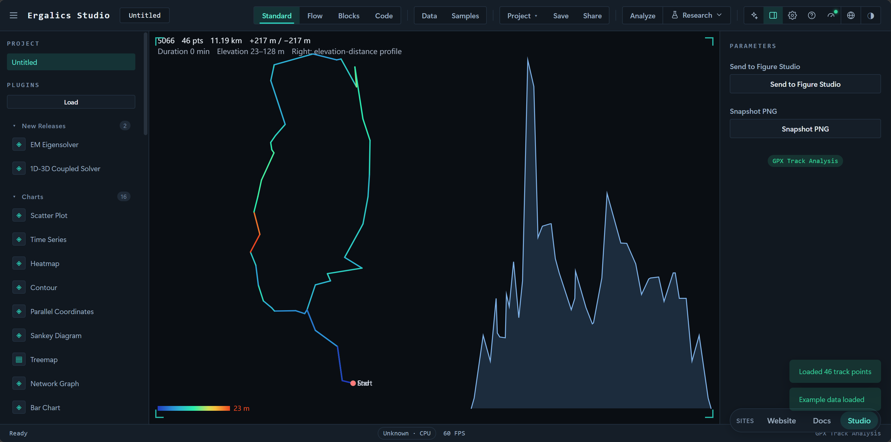
空间插值把离散站点观测值网格化：IDW 幂次可调，普通克里金自动拟合球状/指数变差函数，输出热力面、等值线与站点标注，附 LOOCV 交叉验证误差。
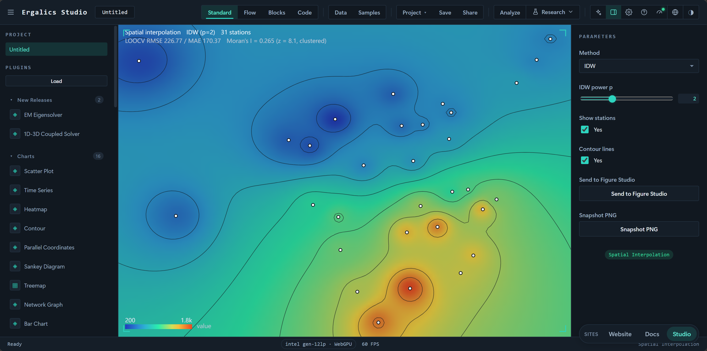
距离与面积量算插件逐段给出大圆距离与累计里程，对点集计算标准差椭圆的半轴与方位角，一图概括分布中心、走向与离散程度。
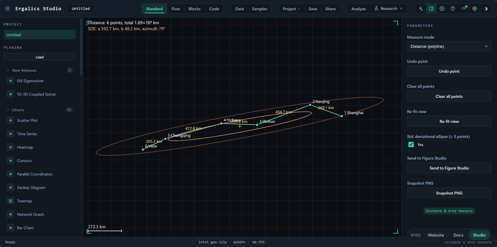
投影变形插件在等距圆柱、墨卡托、正弦、摩尔威德等七种投影下绘制世界海岸线与 Tissot 变形圆，圆面积比表征面积变形、扁率表征角度变形。
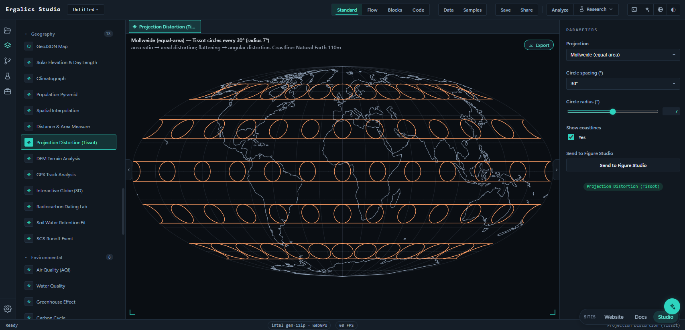
气候直方图以"气温折线 + 降水柱状"双轴绘制月度气候图，自动汇总年均温、年降水与气温年较差并判读气候类型；人口金字塔以背靠背年龄性别结构计算 0-14 / 15-64 / 65+ 占比与总人口性别比，判读增长型 / 稳定型 / 缩减型。
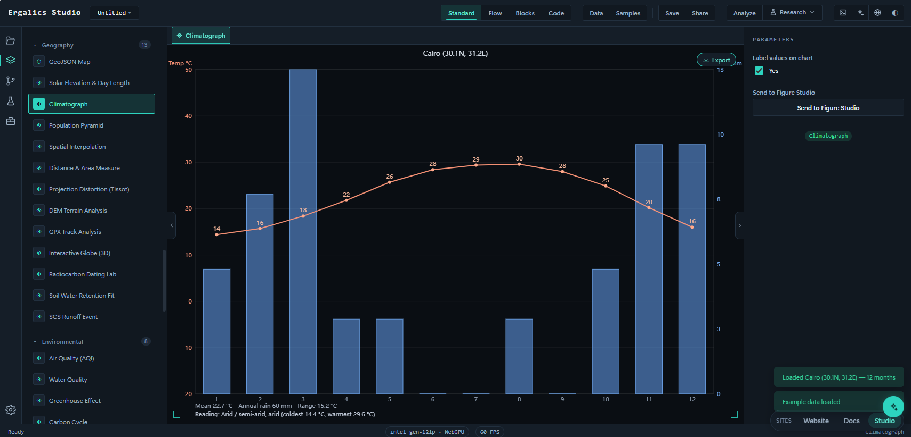
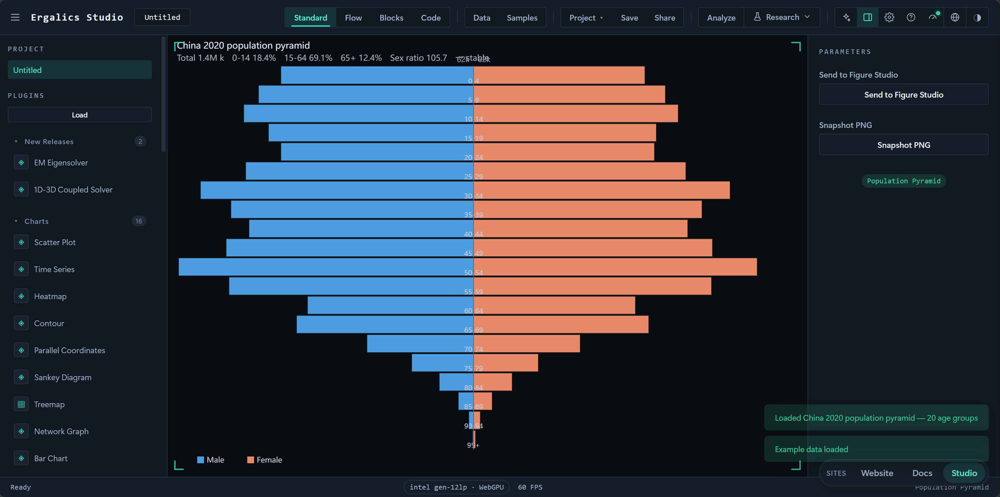
太阳高度与昼夜长短插件由纬度与日期计算太阳赤纬、正午太阳高度、昼长与日出日落地方时，绘制全年昼长与正午太阳高度曲线。
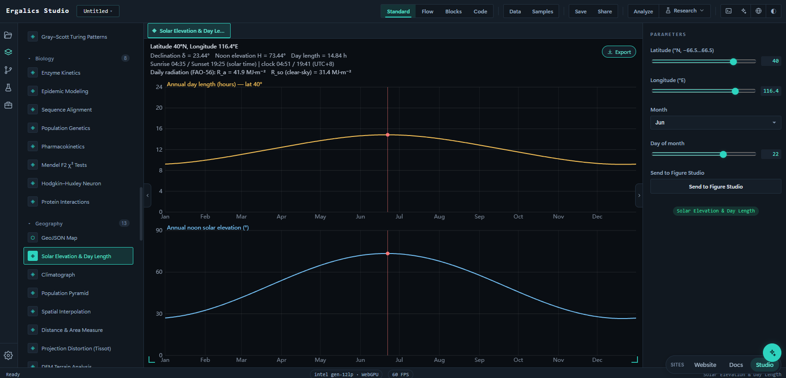
等值线图插件把二维标量场（JSON 网格）渲染为色带加等值线，适合涡旋场、地形等数据；图中双高斯双峰可清晰呈现山谷与脊线。
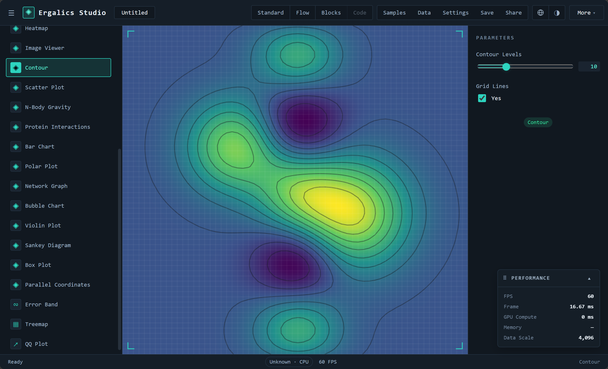
天文 CCD 管线做科研级图像处理：FITS 读写，偏置/暗场/平场校准与宇宙线剔除，σ 裁剪背景统计，局部极大值恒星检测与孔径测光。
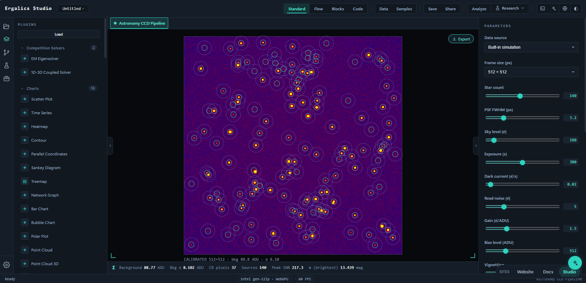
凌星系外行星光变拟合用简化 BLS 做周期检测，Levenberg-Marquardt 拟合梯形模型（P、T0、深度、基线等），输出 1σ 参数误差、相位折叠图与半径比 √δ。
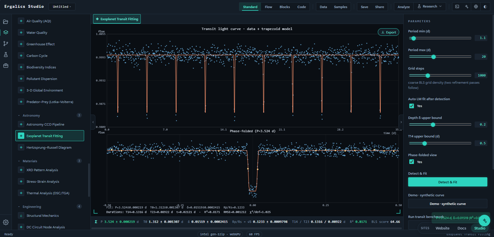
赫罗图插件绘制 B−V 色指数对星等的散点（或按 Hipparcos 视差换算绝对星等 M_V），叠加经验主序参考线与太阳锚点，可对主序段做线性拟合。

晶胞 3D 预览插件加载 CIF / POSCAR / XYZ 构型，以球棍模型查看原子、周期性化学键与晶胞框，并结合有效组成与密度估算。
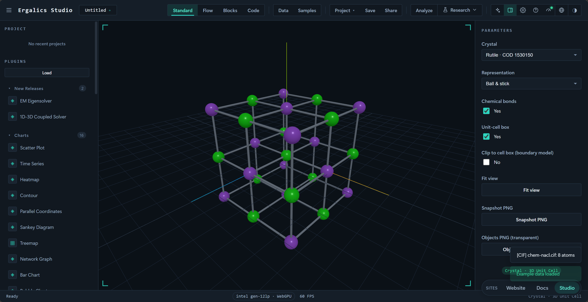
反应动力学插件内置 NumPy / Langevin 引擎，在设定温度与催化剂条件下积分真实分子轨迹：酯化反应（乙醇 + 乙酸）中键越过 Arrhenius 势垒断裂、自由基重组而成键，原子运动来自真实物理而非脚本动画。
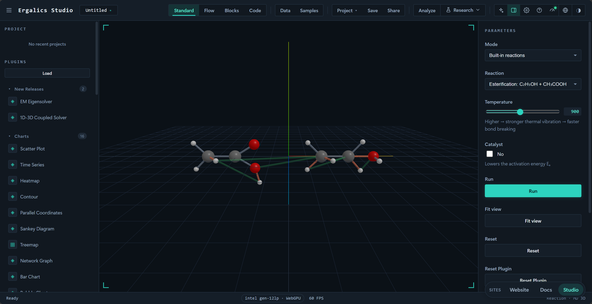
酸碱滴定曲线实验室解全离子平衡方程组（电荷 + 物料平衡 + Ka + Kw），带二分保护的 Newton–Raphson 逐体积求解 [H⁺]，标注等当点、缓冲区与指示剂变色区间。

反应级数判定与 Arrhenius 分析对 [A]–t 数据做零/一/二级线性化最小二乘并按 R² 判优，半衰期法交叉验证，Arrhenius 回归回收活化能 Ea ± σ 与指前因子 A。
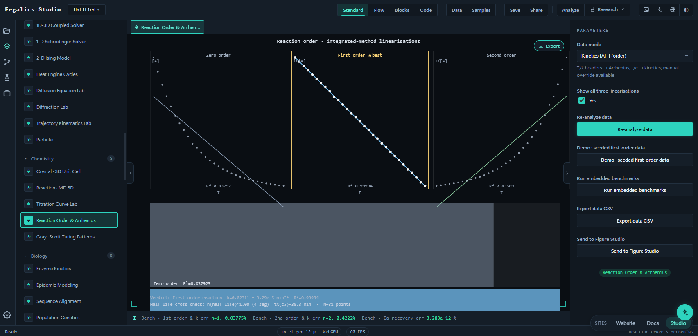
Gray–Scott 反应扩散插件以 FTCS 显式差分在周期网格上演化反应-扩散方程，内置 Pearson (1993) 经典分区预设与质量守恒数值基准。

XRD 衍射图谱分析对粉末衍射谱（2θ–强度）做基于突出度的峰检出、布拉格定律换算 d 间距、立方晶系最小二乘晶格常数精修，并与常见物相参考卡比对。

热分析插件在基线校正后做峰检出与外推起始/峰值温度：DSC 积分相变焓变，TGA 分解失重台阶并输出起始温度与残重。
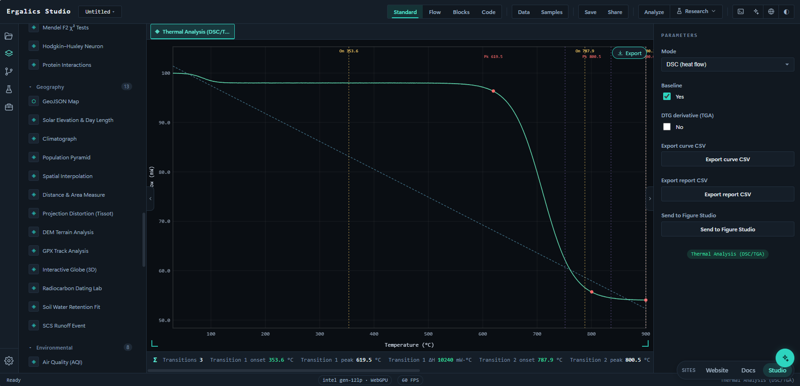
酶动力学插件以 v=f([S]) 饱和曲线对照无抑制、竞争性、非竞争性与反竞争性四种情形，Levenberg-Marquardt 从含噪初速度数据反解 Vmax 与 Km，输出 kcat 与催化效率。
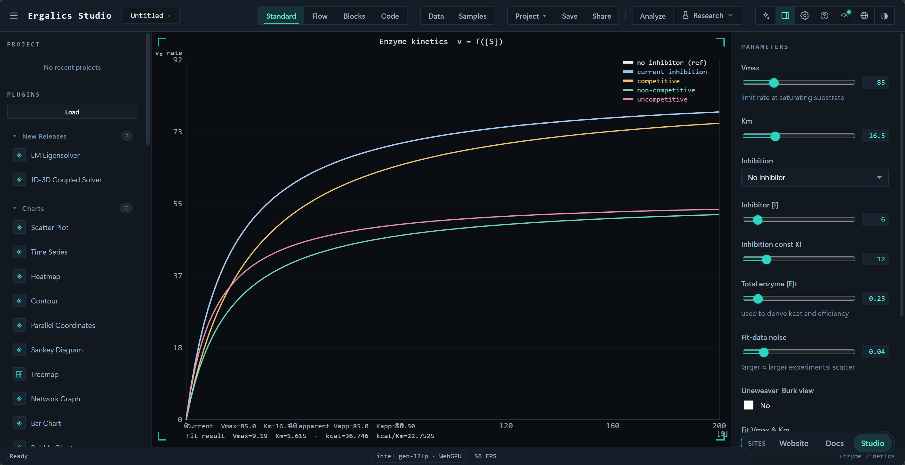
传染病分室模型以经典 RK4 积分确定性 SIR / SEIR 方程，输出 R₀、群体免疫阈值、感染峰值时刻与总感染率。

序列比对与分析提供 BLOSUM62 或核酸打分矩阵的双序列比对：全局 Needleman-Wunsch 或局部 Smith-Waterman，仿射空位罚分，另附碱基组成与 GC 滑动窗口分析，支持 FASTA 数据。
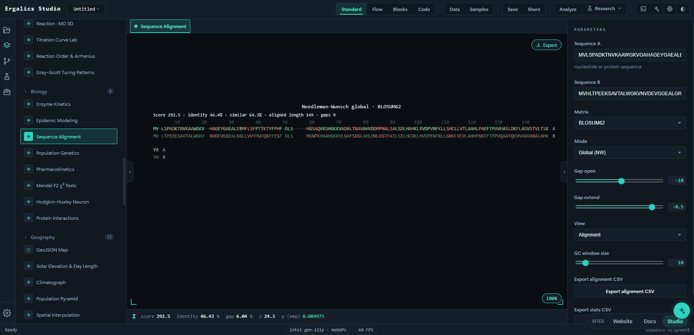
群体遗传学插件做哈代-温伯格平衡卡方检验，以及带可选自然选择（隐性/加性/显性）的、可复现的 Wright-Fisher 遗传漂变模拟，展示等位基因频率在重复种群中的随机游走。
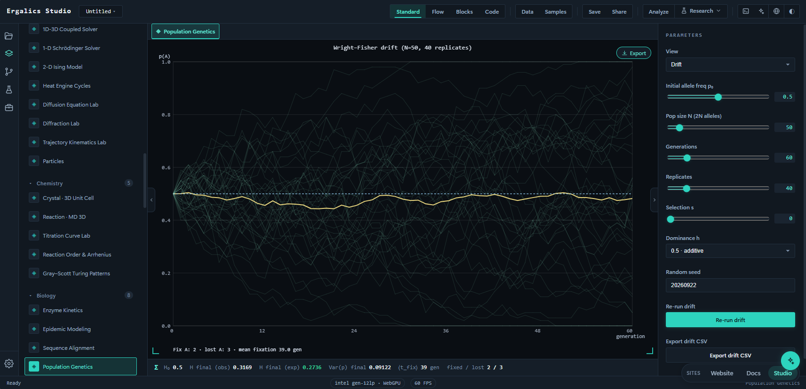
孟德尔 F2 分离比检验对单杂合 3:1 与双杂合 9:3:3:1 做卡方拟合优度检验，内置 1866 年论文七性状原始 F₂ 计数，自实现不完全伽马函数计算 p 值。
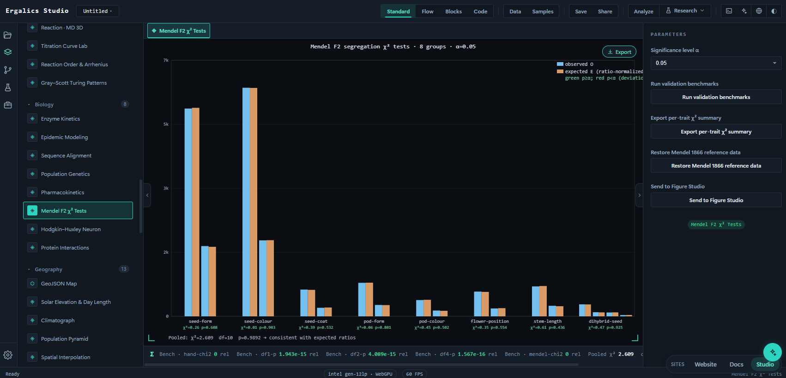
Hodgkin–Huxley 神经元插件采用 1952 年原始发表常数做四变量 RK4 积分，展示动作电位 V(t) 与 m/h/n 门控波形，支持电流脉冲与 Q10=3 温度标度。

蛋白质交互网络插件做蛋白质-蛋白质交互网络与力导向布局计算，输出度分布与连通分量等生物学指标。
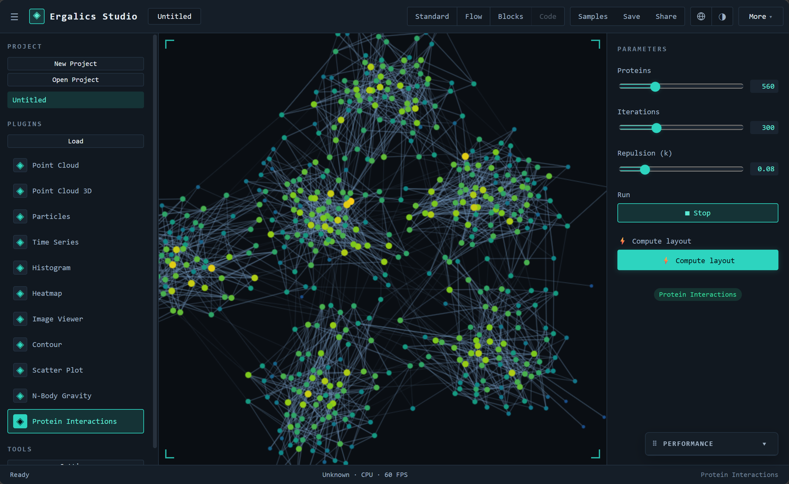
空气质量插件按 HJ 633-2012 分段线性插值计算各污染物 IAQI 与当日 AQI，输出级别、首要污染物与健康提示，可切换 US EPA 断点对照。
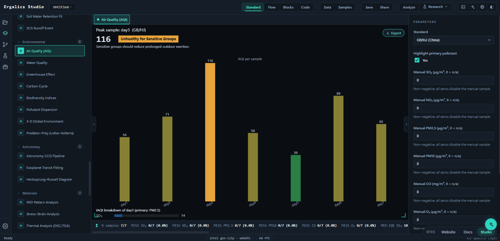
水质评价插件按 GB 3838-2002 将水样各项指标归类 Ⅰ–Ⅴ 类，单因子法取最差类别给出综合判定，绘制相对限值的雷达图。
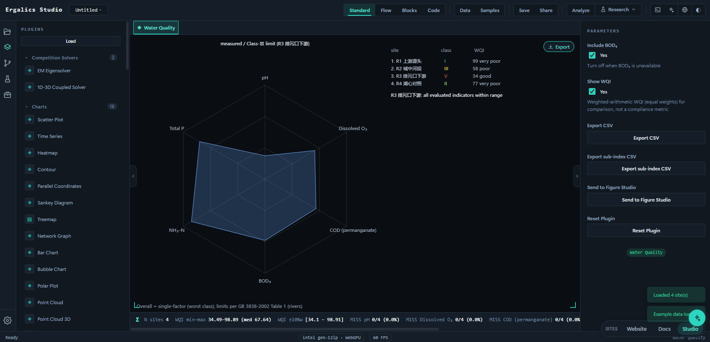
温室效应模拟是零维辐射收支教学模型：CO₂/反照率/云量滑块以 Myhre 辐射强迫公式估算平衡温升。
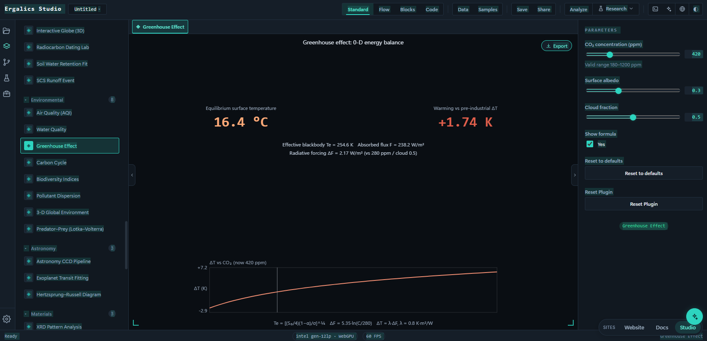
碳循环推演是四碳库箱式模型（大气/植被/土壤/海洋，GtC），donor-controlled 年通量，由人为排放滑块与预设情景驱动时间步进。
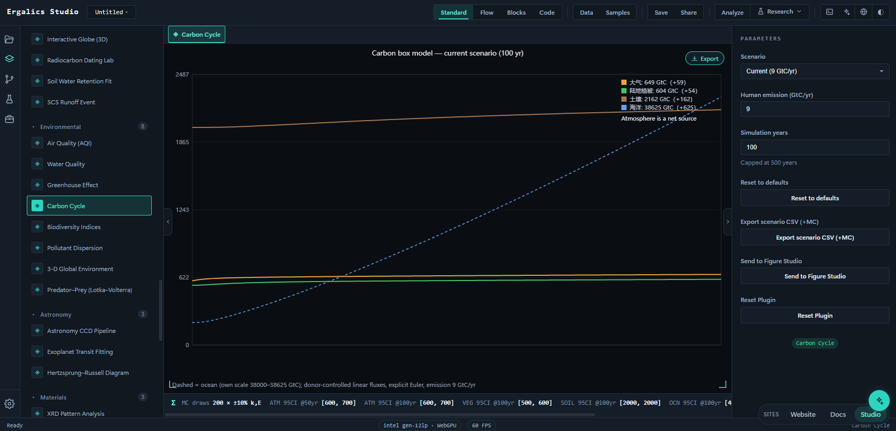
生物多样性指数插件由物种-样方丰度矩阵计算各样地的丰富度 S、Shannon H′、Gini-Simpson 与 Pielou 均匀度 J，并标注优势种。
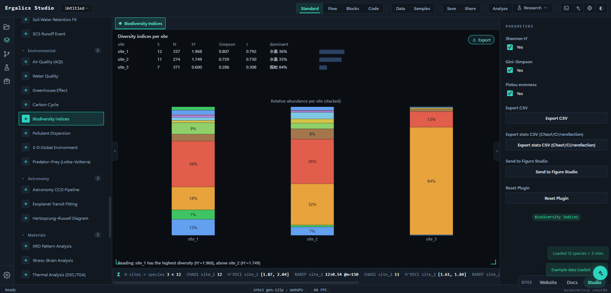
污染物扩散模拟按 Pasquill–Gifford 扩散参数与地面反射项计算连续点源下风向地面浓度场，以热力云图呈现羽流形态。

3D 全球环境以三维地球示意环境要素：全球 CO₂ 浓度色带（含季节呼吸循环）、地表反照率图层与主要洋流方向箭头，月份滑块浏览季节变化。
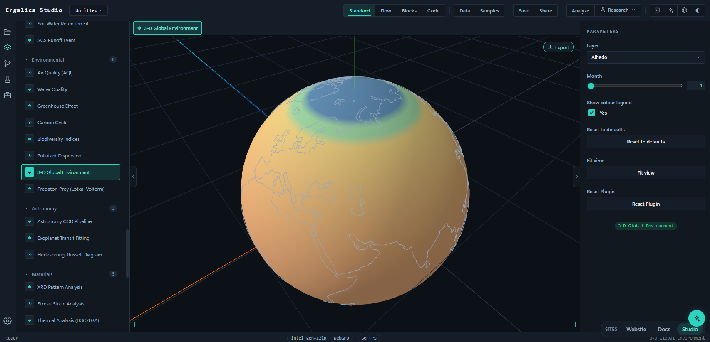
捕食者-猎物插件以 RK4 积分 Lotka–Volterra 方程，给出相图与时间序列，以守恒量漂移校验数值精度，对数空间线性回归估计 α/β/γ/δ。
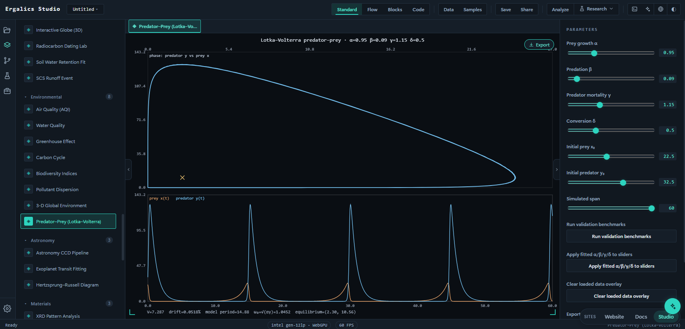
AI 训练插件基于 TensorFlow.js 支持线性回归、非线性神经网络、逻辑回归与卷积神经网络四类模型，画布上方实时绘制损失曲线，下方按模型切换拟合线、二维决策边界或 MNIST 数字识别网格；训练样本内置（线性、三次加正弦、双高斯分类、200 张 MNIST 子集），TF.js 依赖首次点击训练时才懒加载。
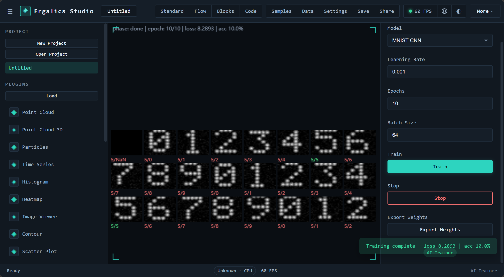
模型推理工具用 WebGPU 在浏览器内运行 ONNX 模型并查看推理结果，逐样本给出预测、置信度与端到端延迟，适合"模型在别处训练、结论要在这里复现"的场景。
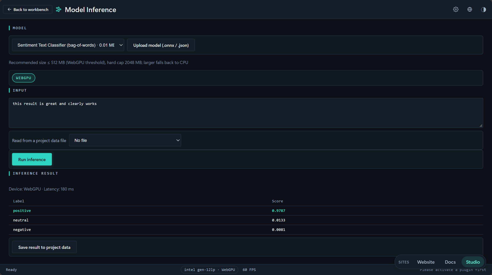
图像处理插件以自实现数值内核提供基-2 二维 FFT、空间/频域卷积、可分离高斯模糊、unsharp 锐化、Sobel 边缘、直方图均衡与 PSNR/MSE 指标。
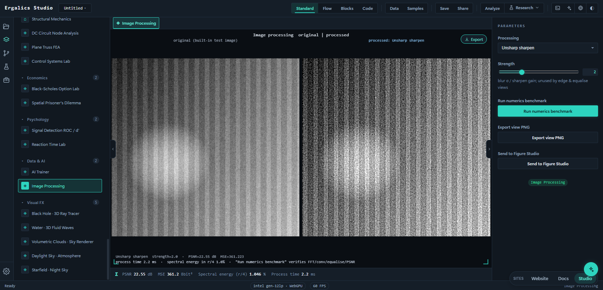
Black-Scholes 期权定价实验室给出解析定价与希腊字母（Delta/Gamma/Vega/Theta），以固定种子蒙特卡洛几何布朗运动交叉验证，并做看涨-看跌平价残差认证与 MC 收敛带。

空间囚徒困境插件按 Nowak-May 模型在二维格子上让 C/D 策略与 8 邻域加自身进行囚徒困境博弈，下一代采纳邻域最高分策略，输出合作率时间序列与空间斑图定性判据。
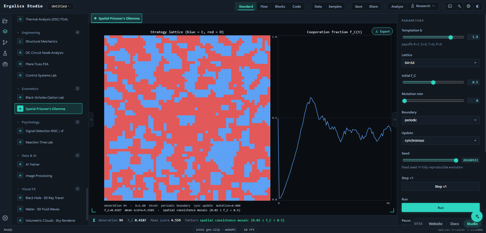
简单反应时实验室在浏览器内做反应时实验，输出精确 95% t 置信区间、双条件 Welch t 检验、Cohen's d 与离群值筛查；同组的信号检测论分析由命中率与虚报率计算 d′、β 与 AUC 并绘制解析 ROC 曲线。
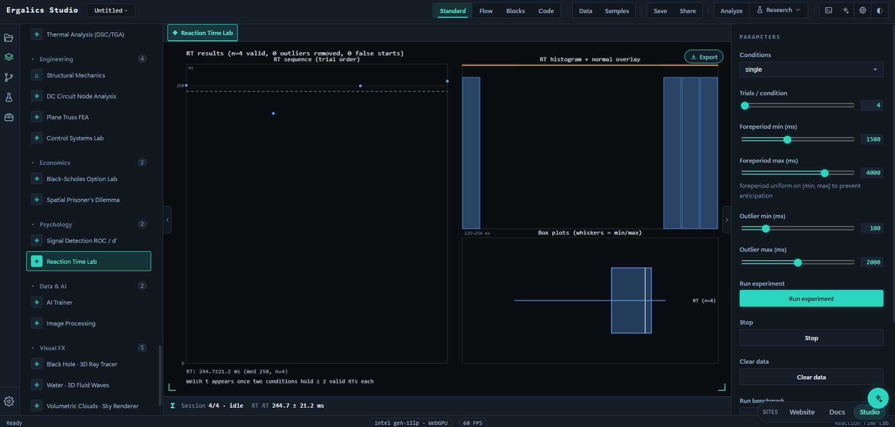
平面桁架有限元分析组装每节点 2 自由度的杆单元刚度矩阵，经划行法约束处理与高斯消元求解，输出位移、轴力（拉正压负）、应力与支座反力并叠加变形图。

结构力学插件实时演示铰接桁架在自重与重物作用下的承重：杆件按轴力着色，材料超限时依次断裂，直至整体垮塌。
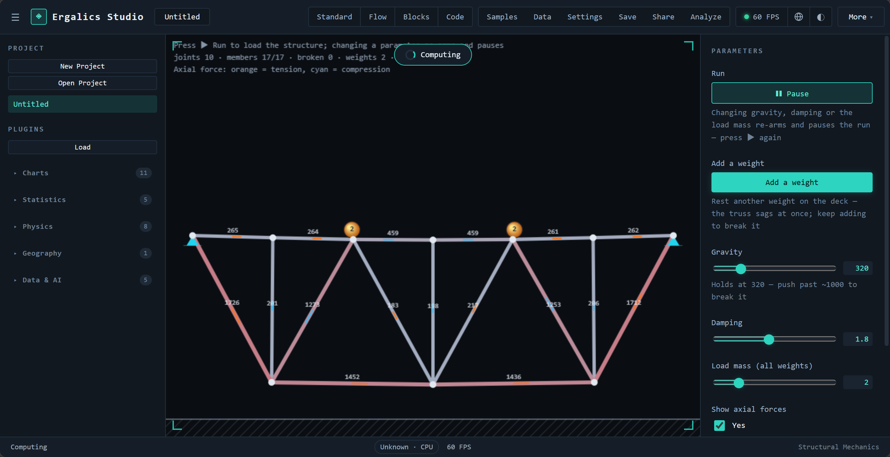
四种模式构成一条从"零代码"到"真代码"的渐进路径：标准模式拖入数据即刻看图，流程模式用 38 个内置区块搭出数据流管线，积木模式写出第一段带变量与循环的程序，代码模式在 Monaco 编辑器里写 Python；三种脚本模式共享同一份 IR，可往返互转、逻辑原样保留。


课程模式以本地优先实现教学闭环：教师创建课程并发布绑定学科模板的作业，学生领取任务、在项目中作业并提交运行结果的 repro.lock 快照，教师查看学生 × 作业矩阵、记录评分评语并整班导出。
三维曲面插件把高度场 z=f(x,y) 渲染为可旋转缩放的网格曲面；复变函数域着色以内置递归下降复数表达式解析器逐像素成像 f(z)，色相编码辐角、对数模长等值线带编码模长。


黑洞 3D 光线追踪插件做广义相对论实时光线追踪：逐像素 RK4 积分史瓦西零测地线，含多普勒集束吸积盘、引力红移与引力透镜星空。

水波 3D 流体以波动方程 FDTD 求解器与精确深水色散 ω²=g·k 的 Gerstner 海面呈现水面波动；星空渲染器由程序化星点、真实银道面银河带与恒星周日运动（GMST）合成夜天，附 Bortle 光污染模型。
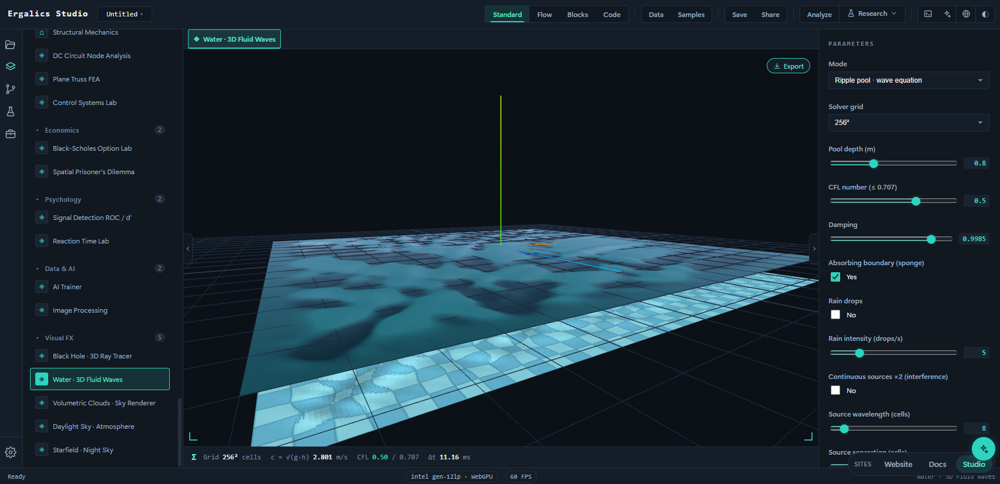
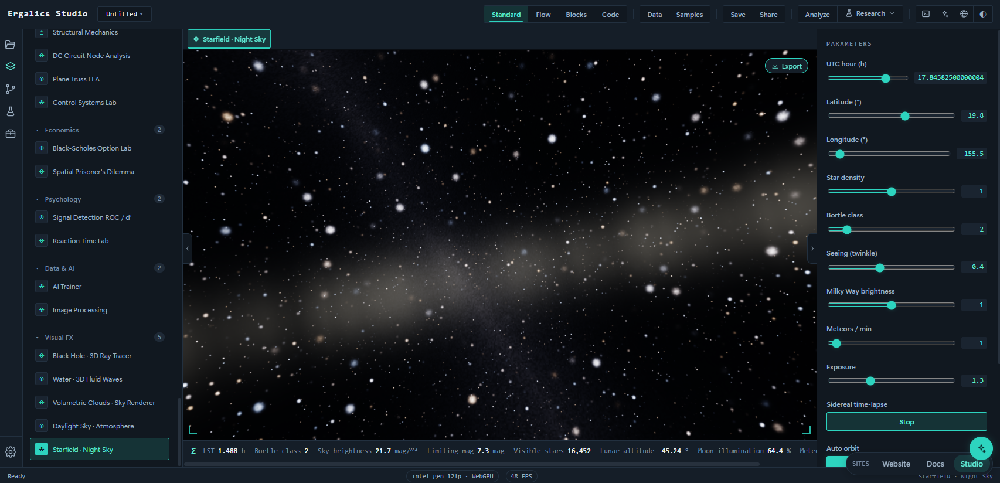
趣味工具组共 10 个、按需加载以保持首屏轻量，覆盖分形与曲线艺术：科赫雪花以递归折线构造分形，巴恩斯利蕨用迭代函数系统（IFS）的四个仿射变换绘出蕨叶，谐振记录仪由衰减正弦叠加生成曲线，配色探索器做两色渐变预览。
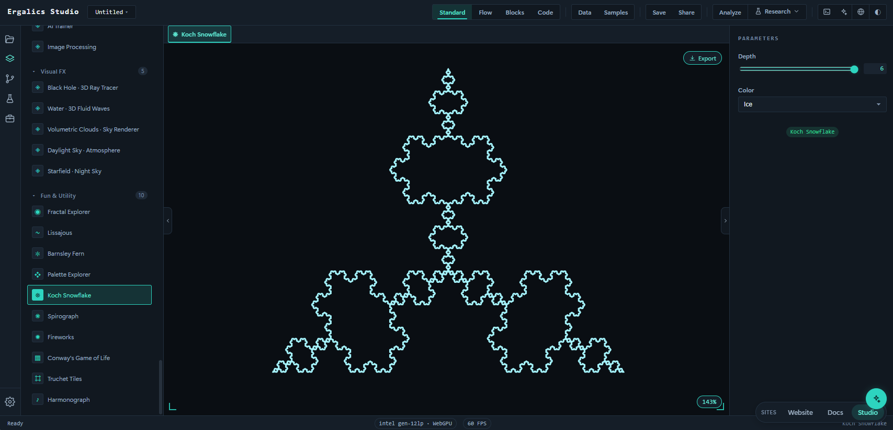
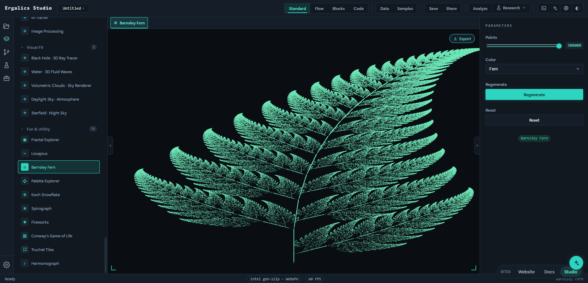
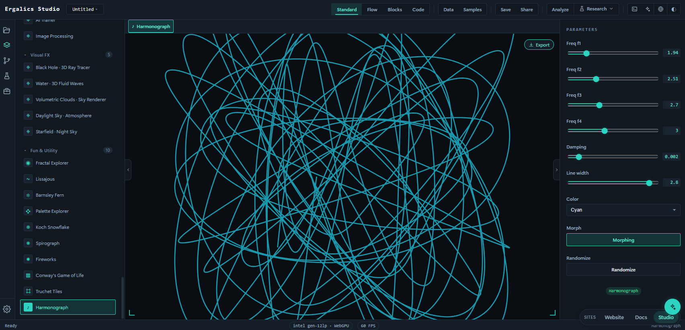
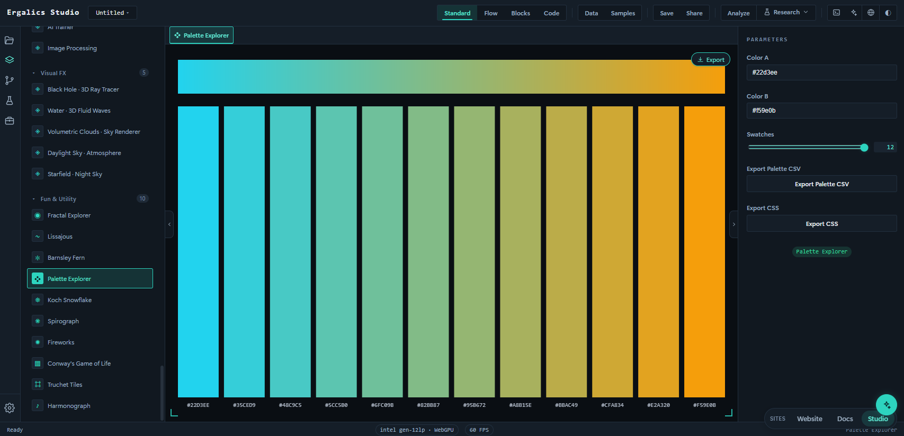
散点、热力图、柱状、雷达、网络、矩形树图、平行坐标、点云、直方图、箱线、小提琴、QQ 与误差带 13 类基础图型全部在浏览器内渲染、参数实时可调，以下为对应插件的示例渲染。
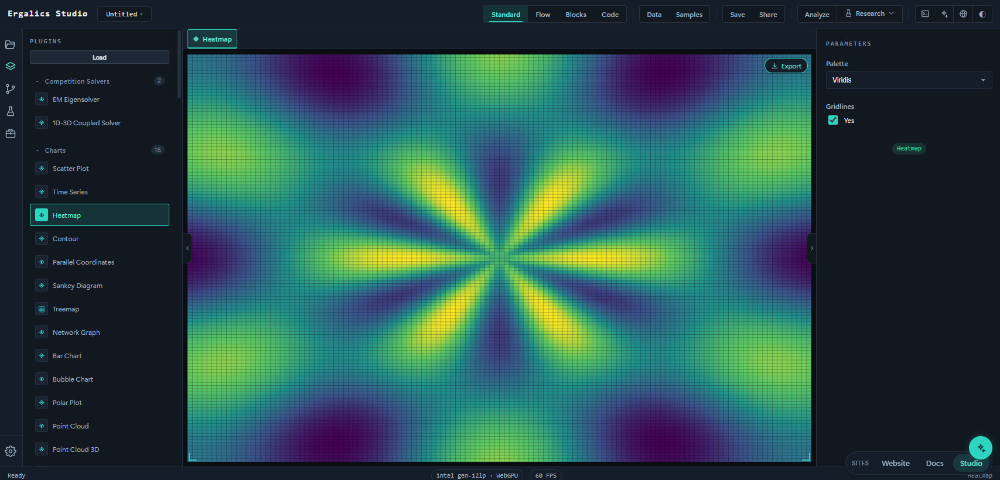
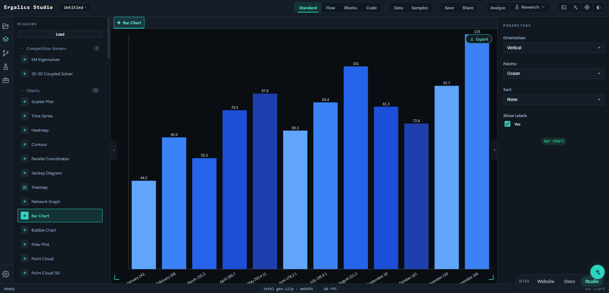
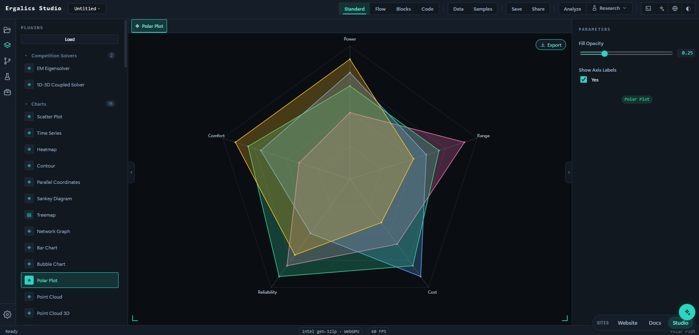

以下 11 个领域插件未在前 79 条场景中单独成节，但同样随启动加载、开箱即用，各配一张实截图作为索引，细节见 03《插件系统》。


Ergalics Studio 把复杂度收进浏览器：安装、配置与数据搬运都不该出现在科研的路上。打开即可计算，数据留在本机，四种工作模式共享同一份数据——一张图、一条流程与一行代码，都是同一次工作的不同表达。
工具越安静，思想就越清楚。我们做的每一处取舍，都为了把注意力还给问题本身。